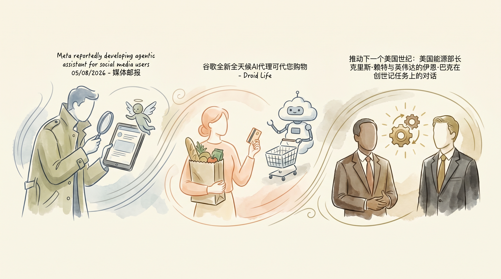

Meta开发针对社交媒体用户的个性化AI助手
两克伴AIGC日报
2026-05-08 星期五

本期关注：Meta、谷歌开发社交媒体AI助手与购物代理，Mozilla集成Claude Mythos强化浏览器安全，Anthropic与SpaceX/xAI达成数据中心交易，NVIDIA探索AI能源应用，中国AI实验室聚焦实际落地与垂直领域探索。
📰 行业动态
谷歌内部测试名为Remy的AI代理，可代为购物
NVIDIA与美能源部长探讨AI在能源领域的应用
🔥 今日焦点
Mozilla 与 Anthropic 合作，使用 Claude Mythos Preview 来加强 Firefox 浏览器的安全性。这篇技术博客深入探讨了如何将 AI 模型集成到浏览器安全系统中，通过实时分析和预测潜在威胁来保护用户。Claude Mythos 的引入让 Firefox 能够更智能地识别钓鱼网站、恶意脚本和隐私泄露行为，相比传统的规则库方法，AI 驱动的防御可以更快适应新型攻击。Mozilla 团队特别提到，这种合作不仅提升了安全性，还保持了浏览器性能不受影响，因为他们对模型进行了针对性优化。这标志着浏览器安全正在从被动防御转向主动预测，AI 在网络安全领域的应用又迈出了重要一步。
---
Anthropic 与 SpaceX/xAI 达成了一项重磅数据中心交易，将使用 SpaceX 的所有数据中心容量。这笔交易背后，是马斯克和 Anthropic 之间微妙的平衡——一方面，xAI 需要大量计算资源训练 Grok 模型；另一方面，Anthropic 需要 SpaceX 的基础设施支持其 Claude 系列发展。有趣的是，这笔交易发生在 Code w/ Claude 活动上，却没有引起太多媒体关注，可能是双方刻意低调处理。从技术角度看，这种合作意味着两家公司将共享计算资源、优化能源使用，并可能共同探索太空环境下的 AI 训练可能性。这不仅对两家公司意义重大，也可能改变整个 AI 基础设施市场的格局。
📚 深度长文
这篇文章深入探讨了中国AI实验室内部的真实发展状况，揭示了与外界认知不同的技术路线和商业逻辑。作者实地走访了中国主要AI实验室，发现中国AI发展更注重实际应用和商业化落地，而非纯粹的技术竞争。文章指出，中国AI公司在模型优化和特定领域应用上展现出独特优势，同时在数据获取和计算资源方面面临独特挑战。特别值得注意的是，中国AI实验室在多智能体系统和垂直行业应用方面有深入探索，这为理解全球AI生态多样性提供了宝贵视角。
---
这篇文章通过与Joanna Stern的深度对话，探讨了AI如何真正融入日常生活并改变人类行为模式。不同于技术导向的讨论，文章聚焦于普通人与AI的共处体验，揭示了AI从'工具'到'伙伴'的转变过程。作者提出，当前AI发展的关键不在于模型能力的提升，而在于如何让AI更好地理解人类需求、适应人类习惯。文章特别强调了AI代理（AI Agent）在个性化服务、情感连接和长期关系建立方面的潜力，以及这些应用背后的技术挑战和伦理考量。
🐦 Ta们说
> "The majority of new jobs created since 1940 didn’t even exist in 1940.
There is no fixed "lump of labor". Again and again, new technologies create new jobs.
> "When debt levels reach extreme sizes relative to income, governments are left with a limited set of choices. They can cut spending, raise taxes, restructure the debt, or print money.
History shows that most systems end up relying heavily on the last option, but printing money doesn’t eliminate the problem–it just shifts how the debt cycle plays out.
> "Complexity is not an intrinsic property of a problem. It's a property of the relationship between a problem and an observer. Once you know the shape of the problem it is no longer complex."
**解读**: Chollet 提出复杂性并非问题固有属性，而是问题与观察者之间的关系。这个观点颠覆传统认知，暗示随着AI对问题理解加深，'复杂'标签可能被消除，对AI能力边界思考很有价值。
📄 重点论文
**核心贡献**: 提出了Context-ReAct，一种自适应的上下文管理方法，根据上下文与任务的相关性以不同细节级别维护代理的轨迹，以应对长时程搜索代理在推理、调用工具和观察信息时面临的快速增长的上下文管理挑战。
**与AI Agent的关联**: 该研究对AI Agent领域具有重要意义，通过提出新的上下文管理策略，有助于提高长时程搜索代理的效率和鲁棒性，对多智能体系统和工具使用等场景具有实际应用价值。
🛠️ 产品推荐
Show HN：I built open-source auth for AI agents（Go，单二进制）是一款基于Go语言开发的开放源代码认证工具，旨在为AI代理提供更安全的身份验证。该产品处于早期阶段，但已展现出强大的安全性能。通过单二进制设计，简化了部署和使用过程。对于AI领域的技术从业者而言，这款产品能有效解决AI代理认证安全问题，提升系统安全性，为AI应用提供可靠保障。
---
Show HN: Swipe Copilot是一款基于Chrome浏览器的扩展插件，旨在帮助用户在Tinder等交友平台上节省时间，提高匹配效率。该插件通过智能筛选和自动滑动，帮助用户快速筛选出优质的匹配对象，减少无效的滑动操作。与同类产品相比，Swipe Copilot拥有更优的用户界面、更丰富的筛选条件和基于照片内容的智能过滤功能，有效提升用户在交友平台上的体验。该产品由一位36岁的男性开发者打造，旨在解决用户在交友平台上耗时耗力却难以找到合适对象的问题。